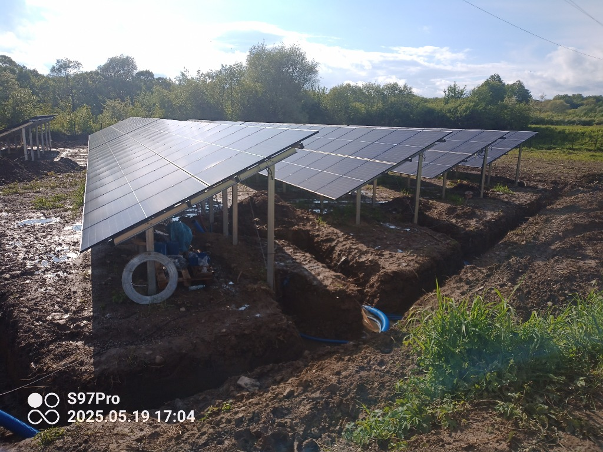

☀️ Sektory OZE & Energetyki Zawodowej • Od 1 MW do Wielkoobszarowych Farm PV
Kompleksowa obsługa geodezyjna budowy farm fotowoltaicznych (PV) i przyłączy SN
Realizujesz projekt farmy fotowoltaicznej na Podkarpaciu? Zapewniamy pełne wsparcie geodezyjne dla deweloperów OZE oraz generalnych wykonawców (EPC) – od wielkoobszarowych map do celów projektowych, przez sprawne tyczenie konstrukcji i długich tras kablowych średniego napięcia (SN), aż po dokumentację powykonawczą do odbiorów.

Obsługa budowy farmy PV – konstrukcje stołów i wykopy pod trasy kablowe
Realizacja Farmy PV
Obsługa Geodezyjna Inwestycji OZE na Podkarpaciu
Zakres prac geodezyjnych dla inwestycji fotowoltaicznych (od 1 MW do dużych farm):
Zapewniamy ciągłość pomiarową dla kierowników budów i ekip kafarujących na terenie powiatów: brzozowskiego, sanockiego, krośnieńskiego, jasielskiego, leskiego, bieszczadzkiego i rzeszowskiego.
ETAP 01 • PRZYGOTOWAWCZY I PROJEKTOWY
1. Etap przygotowawczy i projektowy
- Wielkoobszarowe mapy do celów projektowych (MDCP) pod teren farmy oraz wielokilometrowe trasy przyłączy kablowych SN do GPZ.
- Wznowienia i ustalenia granic działek inwestycyjnych (eliminacja ryzyka wejścia z ogrodzeniem w działki sąsiednie).
- Podziały nieruchomości pod dzierżawę PV oraz wydzielenie dróg dojazdowych i stacji trafo.
ETAP 02 • REALIZACJA I KAFAROWANIE
2. Etap realizacji (szybkie tyczenie w terenie)
- Masowe tyczenie stołów pod panele (konstrukcji wsporczych / pali pod kafar) szybkimi odbiornikami GNSS RTK.
- Tyczenie stacji transformatorowych (trafo), magazynów energii, dróg technologicznych oraz narożników ogrodzenia farmy.
- Tyczenie linii kablowych SN/WN, przewiertów sterowanych (HDD), przecisków i domiary muf kablowych na otwartym wykopie.
ETAP 03 • ODBIORY PGE & PINB
3. Etap odbiorowy
- Kompleksowa geodezyjna inwentaryzacja powykonawcza całej infrastruktury farmy PV (stoły, inwertery, drogi, ogrodzenie, linie nN/SN, światłowody).
- Inwentaryzacja przyłącza energetycznego SN zgodna z wymogami technicznymi operatora sieci (PGE Dystrybucja) oraz nadzoru budowlanego (PINB).